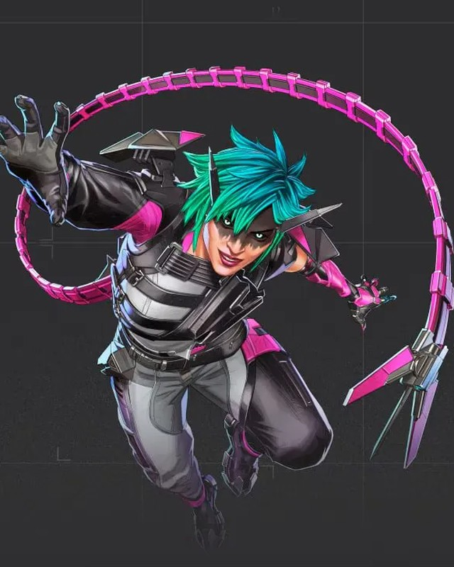

2735
A parallel Olympus appears in the Outlands
A parallel Olympus appears in the Outlands. It destroys the Stasis Net satellite above Cleo, freeing the Hope colony. The wiki presents this as Alter's arrival in that universe.

Dimension-hopping thief and mercenary whose origins, birth year and source of her Void tech are all unknown. She travels between universes for amusement, is drawn to dying worlds, and traced several collapses back to Horizon. In Season 21 she steals an Ark shard and manipulates Horizon, offering to help her reunite with her son Newton, while Ash sets out to stop her. The wild stories she tells about her past are deliberate jokes.
A parallel Olympus appears in the Outlands. It destroys the Stasis Net satellite above Cleo, freeing the Hope colony. The wiki presents this as Alter's arrival in that universe.
Alter takes the shard from a guarded facility, gets an Apex Card, and gives the shard to Horizon to help her return to her son Newton.